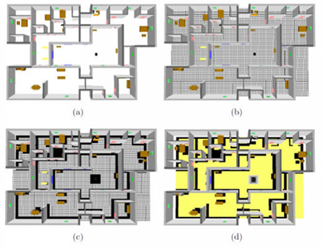
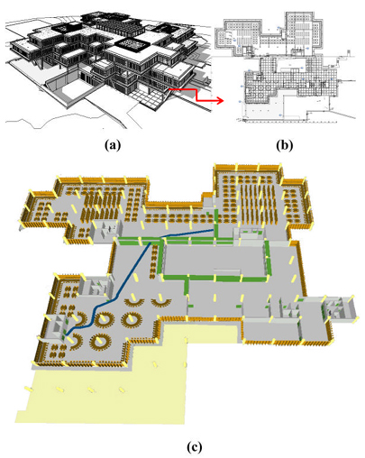

The IFC-based path planning for 3D indoor spaces
aBIM Research Group, School of Software, Tsinghua University, Beijing, China
bKey Laboratory for Information System Security, Ministry of Education of China
cTsinghua National Laboratory for Information Science and Technology
dDepartment of Computer Science and Technology, Tsinghua University

{kind=link}
Fig1.Illustration of space discretization and mapping. (a) The original building restored by the IFC file which contains walls, locked/unlocked doors, windows, columns and furniture as well as dangerous equipments and private spaces defined. (b) Discretize the building space into a N * N grid (e.g. N = 100), where the value of each node in the grid is initially set to be 1 (navigable). (c) Map geometric information of all IFC elements inside the space into the grid nodes, where the nodes occupied by the building elements are simply changed as 0 (innavigable, black cells). (d) According to Table 1, map semantic information of building elements into the grid nodes, where the distribution of the hazard level around the furnace in the space center is displayed in the gray color (the light gray is low risk and the dark gray is high risk). Note that the black cells in (d) show the space occupied by the building elements, while the yellow cells show the navigable space.
Abstract:
Path planning is a fundamental problem, especially for various AEC applications,
such as architectural design, indoor and outdoor navigation, and emergency evacu-
ation. However, the conventional approaches mainly operate path planning on 2D
drawings or building layouts by only considering the geometric information, while
losing abundant semantic information of building objects.
To address this issue, we introduce a new method to cope with path planning
for 3D indoor space through an IFC (Industry Foundation Classes) file as input.
As a major data exchange standard for Building Information Modeling (BIM), the
IFC standard is capable of restoring both geometric information and rich semantic
information of building objects to support lifecycle data sharing. Our method con-
sists of three main steps: (1) extracting both geometric and semantic information
of building elements defined within the IFC file, (2) discretizeing and mapping the
extracted information into a plane grid, (3) and finally finding the shortest path
based on the mapping for path planning using Fast Marching Method. We aim
to process different kinds of building elements and their corresponding properties
to obtain rich semantic information that enhances path planning. The paper also
presents some experiments to demonstrate the accuracy, efficiency and adaptability.
Links:
Paper(PDF) [2.79MB]
Results:


{kind=link}
Fig2.The IFC-based path planning system works on the second floor of the selected library. (a) is a bird's eye view of the south of the library. (b) is the full floor plan of the second floor. (c) is the shortest path (blue color) from the southwest entrance to the northeast reading room on the second floor of the library using our system.

Fig3.The shortest path inside a three-storey space (slabs are displayed in transparency), where the staircases are considered as the transit nodes of the path.
Acknowledgements:
The authors would like to thank Mr. Xiaogang Zhao for providing the Revit
model (Library of Xuzhou Institute of Architectural Technology) for exporting
to the IFC format. The research was supported by the National Science Foundation
of China (61003095), the National Technological Support Program for
the 12th-Five-Year Plan of China (2012BAJ03B07), and Chinese 973 Program
(2010CB328001).
Citation
[Bibtex] Ya-Hong Lin, Yu-Shen Liu, Ge Gao, Xiao-Guang Han, Cheng-Yuan Lai, Ming Gu. The IFC-based path planning for 3D indoor spaces. Advanced Engineering Informatics, 2013; 27(2): 189-205. (SCI, 2013 Impact factor: 2.068)
Contact:
Dr. Yu-Shen Liu, Email address: liuyushen@tsinghua.edu.cn.